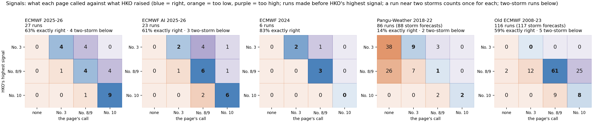
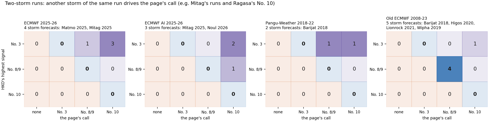
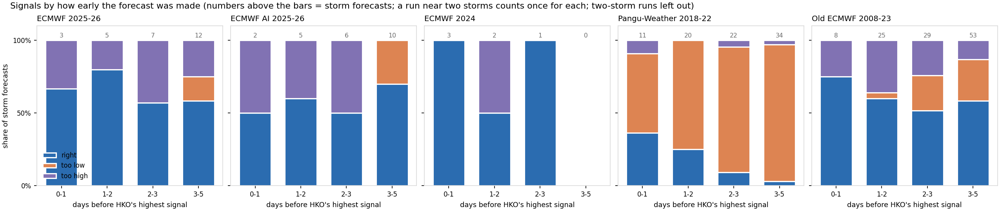

← back to the forecasts · Method · Inputs by year
How good is it?
Past cases only: each chart compares the site with what the Hong Kong Observatory (HKO) recorded. Click a chart to enlarge it. Words are explained on Inputs by year. State of 8 Oct 2026.
Signals


The page's call = the highest signal at least 8 forecast versions reach (Pangu: its single forecast), from any storm at any time in the run; a run near two storms counts once for each.


Two-storm runs, shown apart: versions that also carry this storm are drawn on another storm whose signal sets the call (e.g. Mitag's runs and Ragasa's No. 10). The storm is found by its track, never by distance to Hong Kong.


By how many days before HKO's highest signal the forecast started.
Storm strength

On the dashed line = same as HKO; above = too strong; below = too weak.
Gale-wind reach toward Hong Kong

How far gale winds (63 km/h) reach on the side facing Hong Kong.
Gale stations

How many of HKO's 8 reference stations had gale winds.
Wind index

The wind index checked on HKO's own records.

Storm peaks: since 2021 against HKO's station winds; 2004–2021 against the peaks HKCOC published.
Methods compared

Darker bar = the one in use. Lower is better.